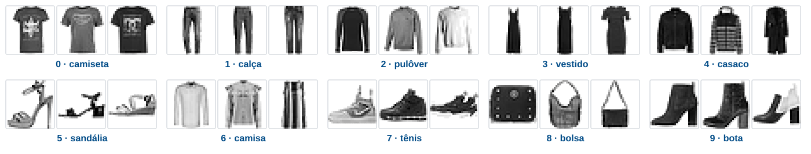
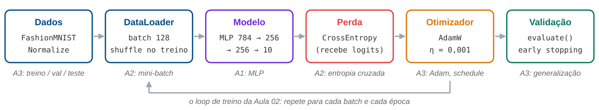
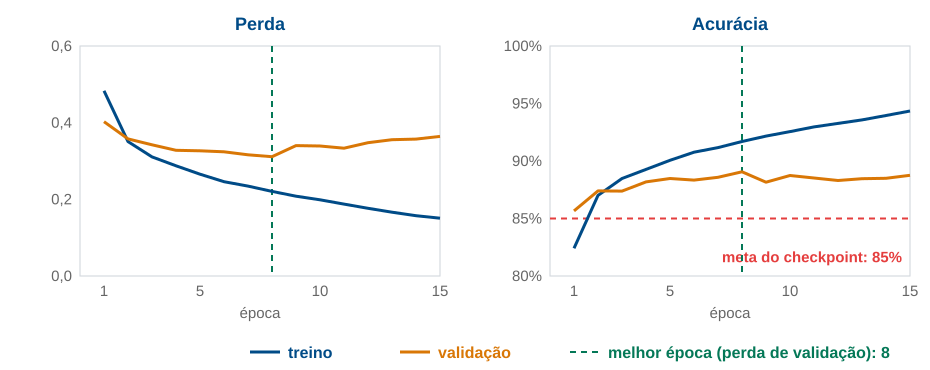
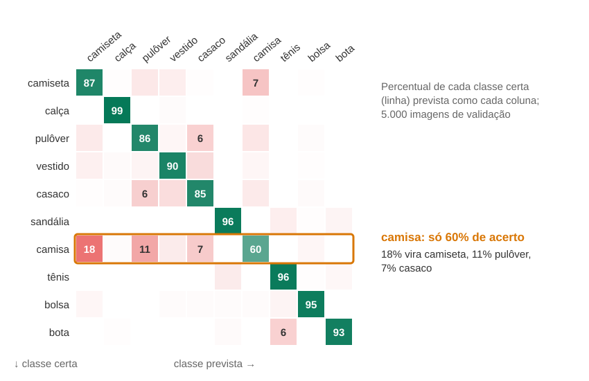

Montar, do zero, um pipeline completo e reprodutível de treino em PyTorch e usá-lo para comparar escolhas de otimização e regularização no Fashion-MNIST: 70 mil imagens 28×28, 10 classes de roupa. Mais difícil que o MNIST (camisa, camiseta e pulôver se parecem), mas ainda treina em CPU em minutos.

Nada aqui é novo: cada peça é de uma aula do bloco. O lab é juntar tudo num código que roda de ponta a ponta, e que você vai reaproveitar nos próximos cinco labs trocando só o modelo e os dados.
| Etapa | O que fazer | Conceito (aula) | Tempo |
|---|---|---|---|
| 1 | Dataset e DataLoader, normalização, split de validação | Treino, validação e teste (A3) | 15 min |
| 2 | MLP com nn.Module | MLP e ativações (A1) | 10 min |
| 3 | Loop de treino e de validação; device; sementes | Loop de 5 passos (A2) | 25 min |
| 4 | Teste de sanidade e curvas | Diagnóstico (A3) | 10 min |
| 5 | 3 experimentos controlados | Otimizadores e regularização (A3) | resto + casa |
Os trechos a completar estão marcados com # TODO. Só preencha esses; o resto já é a infraestrutura.
tfm = transforms.Compose([
transforms.ToTensor(),
transforms.Normalize((0.2860,), (0.3530,)),
])
full = datasets.FashionMNIST('data', train=True,
download=True, transform=tfm)
g = torch.Generator().manual_seed(42)
train_ds, val_ds = random_split(full, [55_000, 5_000],
generator=g)
train_loader = DataLoader(train_ds, batch_size=128,
shuffle=True)@torch.no_grad()
def evaluate(model, loader):
model.eval()
correct, total, loss_sum = 0, 0, 0.0
for xb, yb in loader:
xb, yb = xb.to(device), yb.to(device)
logits = model(xb)
loss_sum += loss_fn(logits, yb).item() * len(yb)
correct += (logits.argmax(1) == yb).sum().item()
total += len(yb)
return loss_sum / total, correct / totalA média 0,2860 e o desvio 0,3530 foram calculados nas imagens de treino. Por que não usar também as de teste? (Pense em vazamento, Aula 03.)
Pegue 128 imagens e treine 200 passos só nelas. Uma rede com 269 mil pesos tem capacidade de sobra: a perda tem que chegar perto de zero.
Se não chegar, o bug está no loop: esqueceu o zero_grad(), passou probabilidades em vez de logits, trocou train() e eval()...
Primeiro garanta que a rede consegue fazer overfitting; só depois se preocupe com generalização.
Leva 10 segundos e evita uma tarde depurando um treino que nunca ia funcionar.
xb, yb = next(iter(train_loader))
for i in range(200):
loss = loss_fn(m(xb), yb); opt.zero_grad(); loss.backward(); opt.step()
print(loss.item()) # deve ficar perto de 0
Com a configuração do notebook (AdamW, $\eta = 0{,}001$), a validação passa de 85% já na primeira época e para em torno de 89%. Depois da época 8 a perda de validação volta a subir: o mesmo overfitting da Aula 03, e o early stopping do fit() guarda a época 8.
Escolha 3 configurações que testem uma hipótese clara. Mude uma coisa de cada vez. Exemplos:
| Config | Otimizador | η | Dropout | Weight decay |
|---|---|---|---|---|
| A | SGD | 0,1 | 0 | 0 |
| B | AdamW | 0,001 | 0 | 0 |
| C | AdamW | 0,001 | 0,3 | 0,01 |

A matriz de confusão mostra onde a acurácia média esconde os erros. Aqui, quase tudo se concentra em camisa, confundida com camiseta, pulôver e casaco: um MLP vê só pixels soltos, sem a forma da gola ou dos botões. Na entrega, um parágrafo assim vale mais do que só o número.
Travou? Compare suas curvas com as do slide "O que esperar no checkpoint". Perda que não cai desde a primeira época quase sempre é bug no loop, não hiperparâmetro.
Envio: página de entrega
| Critério | XP |
|---|---|
| Pipeline correto e reprodutível | 60 |
| Experimentos bem desenhados | 60 |
| Análise e diagnóstico | 60 |
Value que guarda um escalar, seu gradiente e os "pais" no grafo+, *, **, tanh (ou ReLU) e backward() com ordenação topológicaNeuron, Layer e MLP em cima delamake_moons e plote a fronteira de decisãoÉ o grafo computacional da Aula 02, em código. Inspiração: micrograd (A. Karpathy); pode estudar o vídeo, mas escreva o código você mesmo. · Enviar
Quests das aulas 1 a 3, desafios das aulas 1 a 3, checkpoint e entrega do Lab 1: badge e +30 XP.
O MLP de hoje tem 269 mil pesos e trata a imagem como 784 números soltos: deslocar a camisa um pixel muda tudo. Na Aula 05: convolução, que aproveita a estrutura espacial.